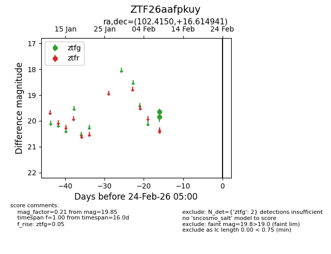
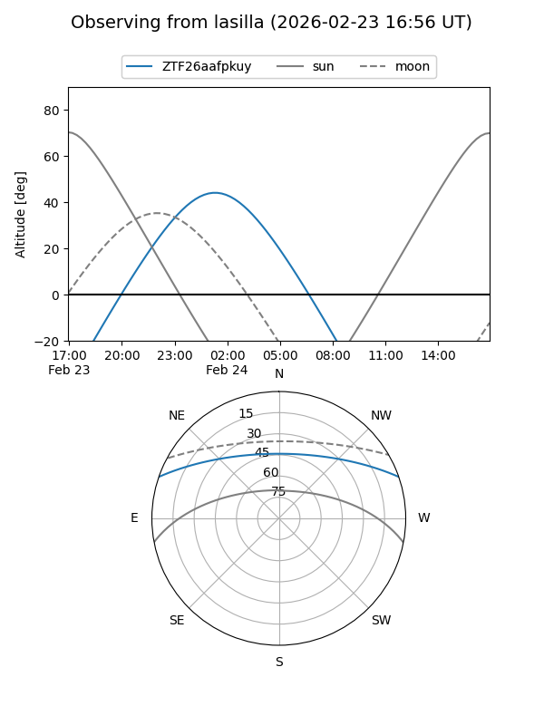
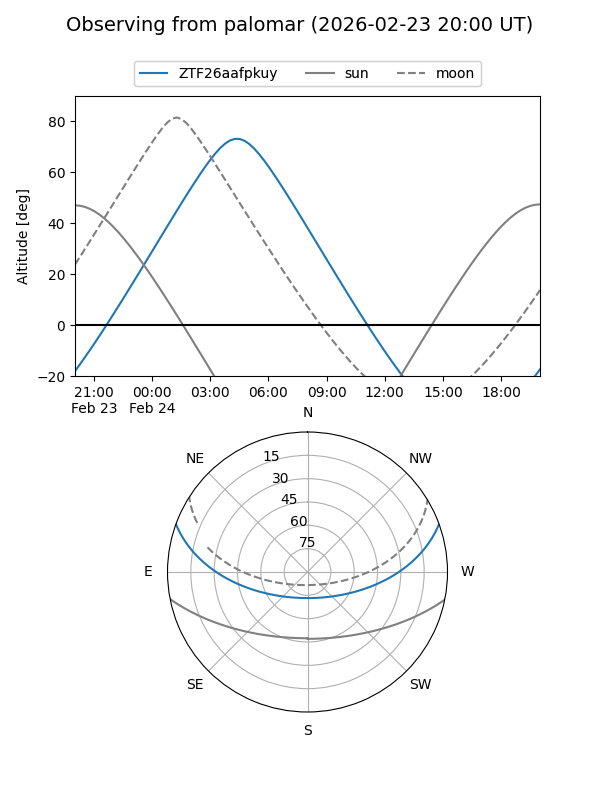

ZTF26aafpkuy
Target ZTF26aafpkuy at 2026-02-24 09:08
Aliases and brokers:
FINK: link
Lasair: link
ALeRCE: link
alt names
ZTF26aafpkuy (ztf,fink_ztf)
Coordinates:
equatorial (ra, dec) = 102.4150,+16.61494
equatorial (HMS+DMS) = 06:49:39.60,+16:36:53.79
galactic (l, b) = (197.8696,+7.10957)
Flags:
Photometry:
last ztfg=19.85
2 ztfg detections
Lightcurve

Visibility


Additional plots